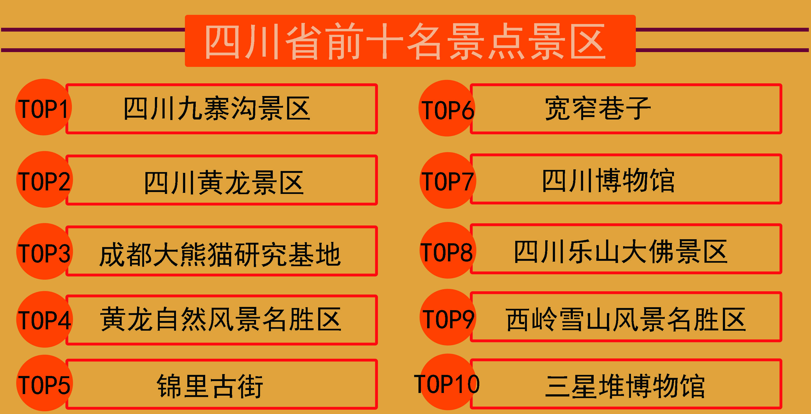
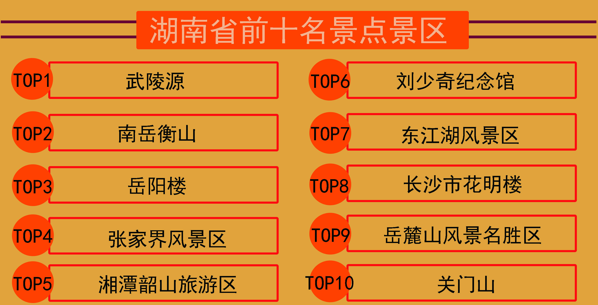
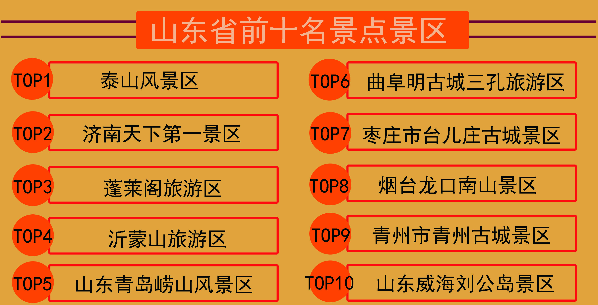
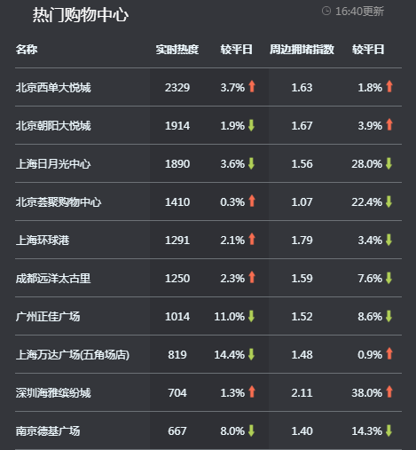
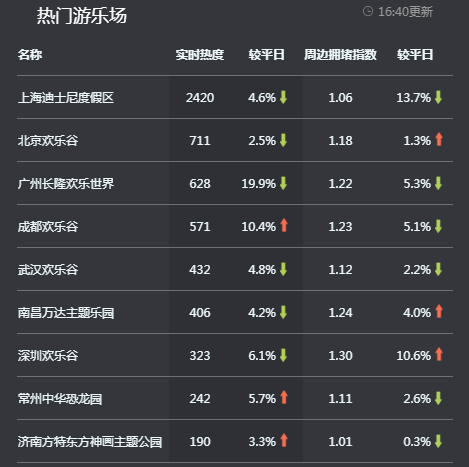
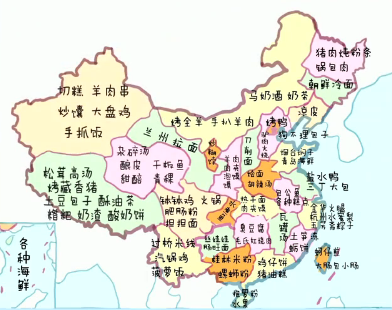

国庆出门发现小伙伴们都不见了，大家都去哪了？
十一黄金周又要到了，难道一周的好时光要在家做宅男（宅女）吗？自驾游怕一半的时间堵在路程上？自驾游出玩怕景点没有想象中的好？有选择拖延症的小伙伴们有福利了，请注意查收！今天，大数据就告诉你们全国各个省份哪个省份游客量最多，游客量最多的省份哪条路最堵，游客最多的省份有哪些5A景区……大数据统统告诉你，快来拿走，旅游攻略做起来！
国庆节黄金周，大家都去哪了？
2016年游客比较集中于山东省、四川省、江西省这三个省份，现在大多数游客比较喜欢大自然景观景点。北上广这些一线城市的热度下降了。
2017年游客比较集中于山东省、四川省、湖南省这三个省份。在近两年的时间里山东省和四川省的热度一直没有下降。四川省和湖南省的气候很适合去游玩，它们的气候一直处于适宜状态。
四川拥有2处自然遗产，1处自然文化遗产，9处风景区。被列为国家重点风景名胜区的有：峨眉山、青城山——都江堰、黄龙——九寨沟、缙云山等处。有19处省级风景名胜区和272处省级文物保护单位，以大熊猫、银杉等为主的各类珍稀动物、植物保护区17个。四川文化区划分为四个区域：巴文化区、蜀文化区、攀西文化区、川西高原。四个文化区各具独特的四川旅游文化特色。其中前三名的景区为四川九寨沟、四川黄龙景区、成都大熊猫研究基地。
湖南人口呈小聚居、大分散态势。也是是我国旅游大省之一，自然景观与人文景观极为丰富，素以名山名水、名楼名寺、名城名人著称于世。旅游胜地星罗棋布，遍及全省。其中前三名的景区为武陵源、南岳衡山、岳阳楼。
山东特色有山有水。五岳独尊的泰山，以及五镇之首的沂山，道教名山的崂山，都在山东境内，一个在泰安，一个是临沂，一个在青岛。
接着是山东的水，这里要说的水，自然指的是济南。素有泉城的美誉，天下第一泉的趵突泉。济南的大明湖.还有即墨的温泉。其中前三名的景区为泰山风景区、济南天下第一景区、蓬莱阁旅游区。
要是小伙伴现在还不知道去哪个省份游玩，可以把游客量最多的省份作为一个参考，俗话说：“人多的地方热闹，人多的地方说明该省份可以游玩的景区比较多也比较好，要不然怎么可能排名一直在前呢？”
出行避堵指南
根据以往的数据来看黄金周前后两天会比较拥堵，出门不仅要看日期还要看路况，自驾游出去玩还要避免很多拥堵的道路，与其在路上堵着还不如绕道而行，还能看看其它路途上的风景。要想去四川省、湖南省、山东省这几个省份游玩就请让开这几条道路。在拥挤的道路中平均速度最高为100km/h，最低的不到20km/h。友好提示：自驾游出行遇到道路拥挤情况一定要小心小心再小心，避免发生交通事故。
根据上图可知，从全国道路左向右道路分别为:
- 1、G15沈海高速 广东省-深圳-宝安区段, 北向东
- 2、外环高速 上海市-浦东新区段, 向西
- 3、G94珠三角环线高速 广东省-东莞-东莞市段, 北向南
- 4、G15沈海高速 广东省-深圳-龙岗区段, 东向西
- 5、G25长深高速 浙江省-湖州-德清县段, 北向东
- 6、外环高速 上海市-宝山区段, 南向东
- 7、G1512甬金高速 浙江省-绍兴-嵊州市段, 西向东
- 8、G9411莞佛高速 广东省-东莞-东莞市段, 北向西
- 9、外环高速 上海市-闵行区段, 东向北
- 10、G20青银高速 山西省-吕梁-柳林县段, 东向北
根据上图可知，四川省从左向右道路分别为：
- 1、G5京昆高速 四川省-成都-武侯区段, 南向北
- 2、G5京昆高速 四川省-德阳-旌阳区段, 北向南
- 3、G85银昆高速 四川省-宜宾-宜宾县段, 北向西
- 4、G5京昆高速 四川省-成都-双流区段, 南向北
- 5、G5京昆高速 四川省-成都-新津县段, 南向北
- 6、G5京昆高速 四川省-广元-青川县段, 南向东
- 7、G93成渝环线高速 四川省-眉山-青神县段,南向北
- 8、G5013渝蓉高速 四川省-资阳-段, 南向西
- 9、G65包茂高速 四川省-达州-万源市段, 北向南
- 10、G5京昆高速四川省-绵阳-江油市段, 南向东
其中拥堵里程最长的道路是G5京昆高速 四川省-成都-武侯区段, 南向北，拥堵里程为0.55km。拥堵里程最短的是G5京昆高速四川省-绵阳-江油市段, 南向东，拥堵里程为0.19km。平均速度最高的是G5京昆高速 四川省-德阳-旌阳区段, 北向南，平均速度为92.05km/h。平均速度最低的是向G5京昆高速 四川省-成都-武侯区段, 南向北，平均速度为35.50km/h。
根据上图可知，湖南省从左向右道路分别为:
- 1、G56杭瑞高速 湖南省-岳阳-临湘市段, 西向东
- 2、G4京港澳高速 湖南省-长沙-长沙县段, 北向南
- 3、G4京港澳高速 湖南省-长沙-芙蓉区段, 北向南
- 4、G4京港澳高速 湖南省-长沙-雨花区段, 南向北
- 5、G72泉南高速 湖南省-永州-零陵区段, 北向西
- 6、G4京港澳高速 湖南省-岳阳-岳阳县段, 东向南
- 7、G5513长张高速 湖南省-长沙-宁乡县段, 东向西
- 8、G4E武深高速 湖南省-郴州-汝城县段, 东向北
- 9、G4京港澳高速 湖南省-湘潭-岳塘区段, 东向北
- 10、G5513长张高速 湖南省-益阳-资阳区段, 西向南
其中拥堵里程最长的道路是G56杭瑞高速 湖南省-岳阳-临湘市段, 西向东，拥堵里程为1.24km。拥堵里程最短的是G5513长张高速 湖南省-益阳-资阳区段, 西向南，拥堵里程为0.29km。平均速度最高的是G5513长张高速 湖南省-益阳-资阳区段, 西向南，平均速度为91.27km/h。平均速度最低的是G56杭瑞高速 湖南省-岳阳-临湘市段, 西向东，平均速度为49.17km/h。
根据上图可知，山东省从左向右道路分别为:
- 1、G25长深高速 山东省-潍坊-青州市段, 南向北
- 2、G3W德上高速 山东省-聊城-莘县段, 北向南
- 3、G3京台高速 山东省-济南-长清区段, 北向南
- 4、G3W德上高速 山东省-聊城-阳谷县段, 北向南
- 5、G20青银高速 山东省-青岛-城阳区段, 北向东
- 6、G2京沪高速 山东省-济南-历城区段, 西向北
- 7、G2京沪高速 山东省-济南-历城区段, 西向北
- 8、G2京沪高速 山东省-临沂-沂南县段, 南向西
- 9、G18荣乌高速 山东省-滨州-无棣县段, 南向北
- 10、G2京沪高速 山东省-济南-济阳县段, 北向东
其中拥堵里程最长的道路是G25长深高速 山东省-潍坊-青州市段,南向北，拥堵里程为1km。拥堵里程最短的是G2京沪高速 山东省-济南-济阳县段,北向东，拥堵里程为0.36km。平均速度最高的是G2京沪高速 山东省-济南-济阳县段, 北向东,平均速度为91.28km/h。平均速度最低的是G2京沪高速 山东省-济南-济阳县段, 北向东,平均速度为54.14km/h。
以上是根据以往大数据分析得到的。友情提示：具体路线可到百度地图查询。如果不喜欢去人多的地方游玩，小编还为你整理了以下的旅游攻略，如果你是一个购物狂，你可去热门的商场买买买；如果你是一个吃货，可以先去美食的省份吃吃吃，然后再游玩；如果你是一个情侣或者家庭自驾游可以去必备的游乐场。
女孩子的福利
终于到了女孩子最期待的地方来了，假期到了，就是要逛街买买买......
许多女孩都喜欢在假期去购物来奖励自己一直很勤劳的工作，也可以给自己一些前进的动力。黄金周各大商场肯定有很多人，想给自己买一些高端的产品可又怕买到假货。大数据给你分析哪些商场热度高？这样你也不怕买到假货了。
商场热度最高的是北京西单大悦城，热度最低的则是南京德基广场。国庆假期热度下降最多的是上海万达广场（五角星店），你可以去里面好好的逛街，尽情的买买买。
（图中数据是根据以往数据得到的）
情侣，家庭必备
情路当然少不了游玩游乐场了，还可以增加彼此的感情。让一只紧张的工作、学习的压力在游乐场全部释放出来。家庭出玩也要照顾到小朋友，首选肯定是带小朋友们去游乐场好好玩耍一天。大数据告诉你哪的游乐场热度较高，这样就不用担心游乐场的设施不齐全了。
游乐场热度最高的是上海迪士尼度假区，热度最低的是242。广州长隆欢乐世界在国庆假期热度下降最快。大部分游乐场的热度在国庆假期的热度会减少，说明大家都去旅游了，没有平时人多，这个时候你可以在游乐场好好玩耍一番了，不用担心人多需要排很长时间的队了。
（图中数据是根据以往数据得到的）
吃货必备
在一个资深吃货中国地图已经不在是原来的地图了，而是变成了一张美食地图。标记着各省份最具有代表性的美食。赶紧收下放入自己的口袋中吧。
若美食地图还有其他具有代表性的美食，你可以告诉小编哦！
世界那么大，为什么不出去走走？世界那么多的风景有看过那几个？趁着黄金假期一场说走就走的旅途。在岁月的道路上不留下遗憾。好了，小编也要收拾我的行囊去玩耍了。
(文章中的图来源于网络)